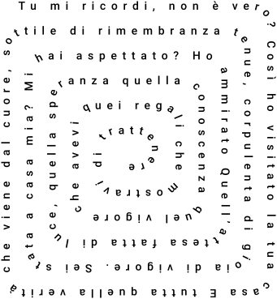
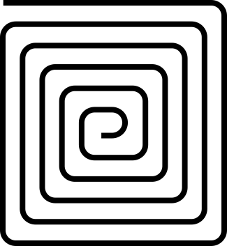

I due file SVG che abbiamo nel progetto

Testo disposto lungo la spirale rettangolare — da animare progressivamente

Tracciato a spirale — compare in dissolvenza al termine
Rispondi alla domanda nel terminale ↓